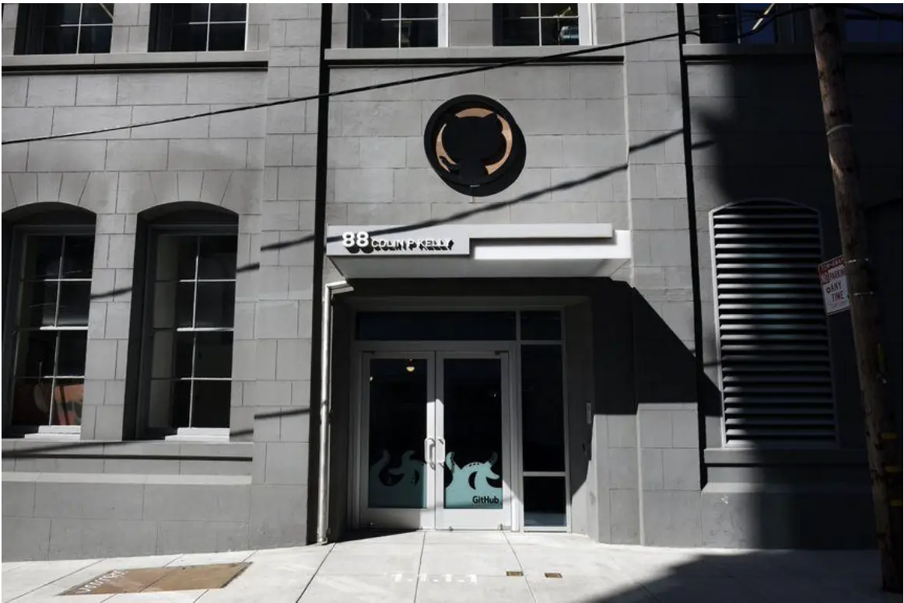
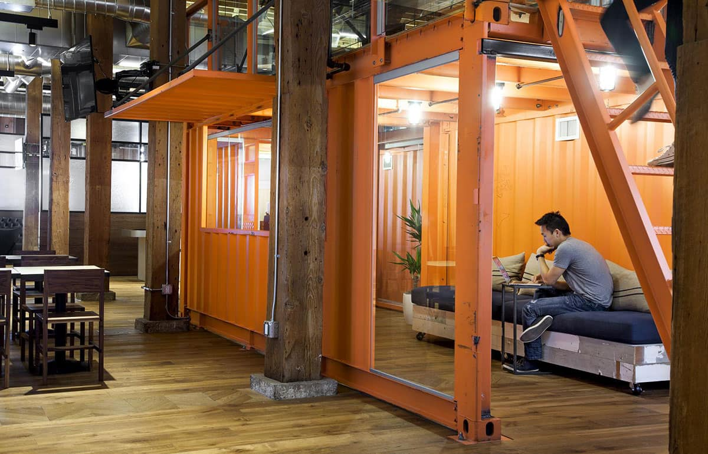
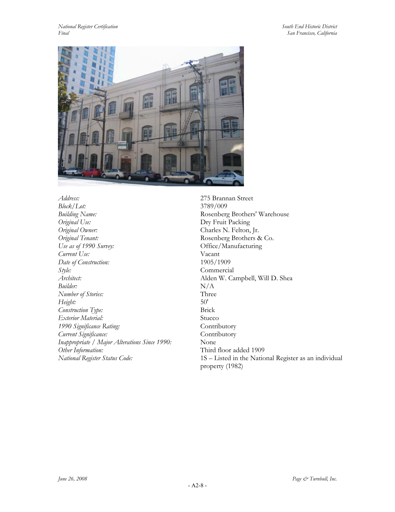
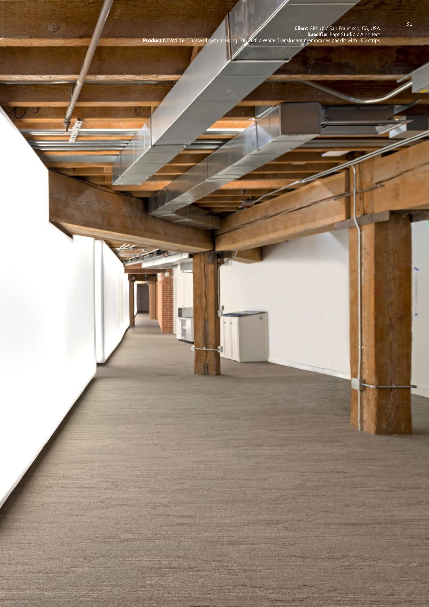
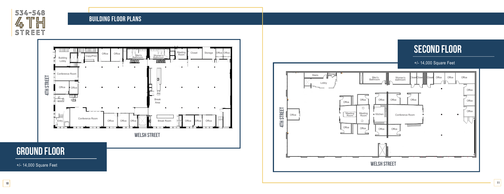
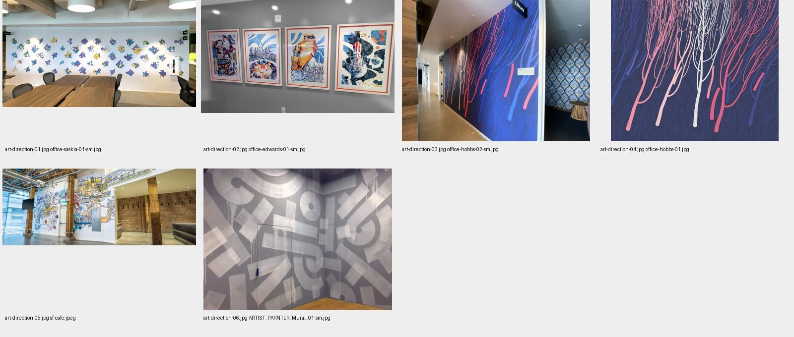

The most distinctive physical reconstruction. Choose the 2013 phase; combine the low-rise industrial envelope with original café/event rooms, containers, library, park and historical reception.
01 / THE STRONGEST REFERENCE
Start with the San Francisco warehouse.
The best documented architectural reference is the historic headquarters at 275 Brannan Street, with GitHub's entrance/event address at 88 Colin P. Kelly Jr Street. Landlord records identify the Brannan building; GitHub's event notices identify the Kelly address. Together with the exterior images, these support treating them as two address references for the headquarters rather than inventing two separate HQ buildings. S18 S34 S33
The recognizable design is a warm industrial shell with unusually varied places to work: timber structure, brick interiors, wood floors, café/bar furniture, shipping-container rooms, quiet corners and deliberately playful company artifacts. The original architectural concept recreates the cafés, bars and home offices where GitHub began. S01 S03
Enough for a convincing 3D interpretation. Public photos and supplier specifications give us strong material and form references. A survey-grade reconstruction still needs measured plans: a complete public Brannan construction/BIM package was not located.


02 / DO NOT BLEND THE TIMELINE ACCIDENTALLY
There are several GitHub office styles.
| Place / phase | Documented identity | What to use in a model |
|---|---|---|
| Fourth Street HQ Before Brannan | GitHub names 548 Fourth Street in 2012. Later broker brochure variously labels 534–548 and 538–548 Fourth Street. It describes a two-story 1919 building, 28,000 SF total. S23 S22 | Early industrial-office reference; two public floor plans. The brochure's later layout is not certified as GitHub's original fit-out. |
| Brannan original HQ 2013 | FENNIE+MEHL + Studio Hatch. Three-story converted warehouse. Opening-era reception was an Oval Office replica. S01 S06 S09 | Best route for the iconic warehouse, orange containers, historic reception, library, park and café/bar spaces. |
| Rapt expansion Documented by 2018 | Rapt Studio + SC Builders. Brighter central meeting hub, continuous illuminated membrane, quiet library/work niches and softer furniture. Builder's scope is 20,000 SF. S10 S11 | Keep this as its own kit: rounded lit walls, pale timber, upholstered carrels, reading niches and contemporary meeting rooms. |
| Contemporary SF atrium Completion date unstated | IA's Commit to the Future: a suspended polycarbonate field inspired by the contribution graph, resolving into Mona from selected viewpoints. S14 | A strong modern hero feature: repeated green rounded plates, cables, glass enclosure and event seating. No physical movement mechanism is established. |
| Boulder 2014 | Official launch/event photo and address: 1300 Walnut Street, Suite 101. Secondary coverage reports 3,500 SF. S24 S25 | Curved seating divider, yellow/mustard floor, orange chairs, shared round tables and daylight. One useful photo, no plans found. |
| Tokyo 2015 onward | GitHub confirms its first international office in June 2015. An employee presentation mentions Daimon. S26 S35 | Insufficient verified architectural coverage for a faithful model. Do not substitute third-party meetup venues for a GitHub office. |
| Amsterdam 2024 mural | Sasj's Tesselated Plots is explicitly commissioned for GitHub's Amsterdam office. S27 | Light wood, white walls, exposed dark services, blue chairs and subtle keyboard/stitch graphics. Two photos, no dimensioned plan. |
The connection between two SF buildings is documented by SC Builders; landlord filings also record a GitHub lease at 625 Second. The public project pages do not fully map each photographed room to its street address, so this pack does not assign expansion rooms to an unverified measured plan. S11 S19
Two important historical corrections
A 2023 retrospective describes planned office closures, but a 2024 company/landlord-confirmed renewal and landlord filing support continued use of the Brannan property as a collaboration hub. That filing lists expiration in June 2030; it is a dated lease record, not a 2026 occupancy survey. S20 S19 S21
The Oval Office is an opening-era reference, not a verified current room: the retrospective reports it being replaced with a café around 2016. The sculptor's portfolio dates the move to 2014, while contemporary reporting dates the opening to September 2013; use 2013 for the HQ opening and leave the sculpture's exact installation date unresolved. S21 S15 S09
03 / DOCUMENTED MEASUREMENTS & MATERIALS
The facts that can anchor a blockout.
| Item | Documented value / material | Confidence and modeling implication |
|---|---|---|
| Original building | 1905; third story added in 1909. Survey credits Alden W. Campbell and Will D. Shea. Three stories; brick construction; stucco exterior. S17 | Historical survey, before GitHub fit-out. Exposed brick inside does not imply exposed red brick on every exterior face. |
| Historic building height | 50 ft = 15.24 m. PDF page 30, printed A2-8. S17 | Survey-listed height; not an as-built roof/penthouse or floor-to-floor schedule. Use as an envelope check. |
| Total area | 2013 lease: 54,763 SF ≈ 5,088 m². Designers round to 55,000 SF ≈ 5,110 m². Later filing: 57,120 SF ≈ 5,307 m². S18 S01 S19 | Different dates/accounting bases. Never convert total area directly into a known façade width or depth. |
| Original rail motif | Five vintage containers; recreated floor track has brass rails and stamped-concrete ties. S06 | Architect-supplied description. Contractor calls tracks preserved: model the visible rail motif without claiming both sources identify surviving original rail metal. S02 |
| Exposed structural wood | Existing framing was stripped/restored after earlier white paint; historic windows restored. S03 | Warm timber with visible grain and age. Structural member sizes are not published. |
| Workstations | Solid oak butcher-block tops, cast-iron legs; adjustable desks; wall-mounted desks on third-floor walls. Octagonal mobile desks use cold-rolled steel tops. S04 | Maker's material descriptions. Match the particular table photograph; not every tabletop is oak. |
| Themed tables | Situation Room: decorative mahogany profile edge 3 in = 76.2 mm. Poker table: flat-cut walnut with power at alternating corners. S04 | The three-inch value is the stated edge/profile detail, not a measured room or entire slab thickness. |
| Roof / concrete furniture | Square and round tables, acid-etched chess tables, wood/concrete bench, planters and table with built-in planter. S05 | Supplier-authored. Concrete shapes and patterning are better supported than furniture dimensions. |
| Expansion luminous wall | 1 ft = 304.8 mm thick; NEW/LIGHT 3D wall with white translucent T0B1320/TOB1320 membranes backlit by LED strips. S10 S11 S13 | Architect/builder + supplier catalog page 31. Actual membrane skin is not 304.8 mm thick: this is the wall assembly. |
| Quiet-room program | Five sit-in bookshelves, ten reading carrels and custom table. S11 | Builder's count. Images establish rounded niches and upholstery, not exact spacing. |
| Thinktocat | Artist describes an 8 ft / 2.4384 m bronze sculpture; documented patina and tapered plinth. S15 | Design brief, not a final survey. Unclear whether overall quoted height includes pedestal. |
| Atrium artwork | Hundreds of polycarbonate elements, integrated lighting, embedded Octicons/text and viewpoint-dependent Mona. S14 | Material and concept confirmed. Tile sizes, exact grid, suspension offsets and lighting hardware are unmeasured. |
Photographic finish observations
Inspected photographs show timber plank floors, dark steel glazing frames, black tufted leather-like seating, brown hexagonal tile with pale grout, white rectangular kitchen tile, polished gray event floors, stainless steel ducts/hoods, green turf and strong orange container paint. These are visual identifications; exact paint manufacturers, color values, wood species beyond supplier statements, gloss values and acoustic ratings are not established. Photos in the image library carry specific modeling observations.
04 / ART DIRECTION & BUILD STRATEGY
Three coherent modeling directions.
Keep the historic shell, use the brighter Rapt room kit, restrained current graphics and IA atrium artwork. Treat any room arrangement spanning these references as a designed interpretation.
Recommended for the existing project's chunky, friendly art direction: simplify the warehouse and use a few strong landmarks—Invertocat entrance sign, orange container, timber bays and a green contribution feature. Interiors can be separate cutaway modules.
These are research recommendations, not user-approved designs. The project Visual Asset Guide remains the production art reference; this research does not set asset budgets, author geometry or register a runtime model.
Exterior form, in priority order
- Block out a three-story rectangular masonry warehouse and compare its overall height to the historic 15.24 m record. Recover plan proportions from actual parcel/site evidence before assigning width/depth.
- Model repetitive, recessed segmental-arched window openings, horizontal façade bands and parapet. Keep Brannan façade and Kelly entrance observations distinct until the corner geometry is verified.
- Build the Kelly entrance kit: glazed double doors, shallow white canopy/address strip and circular dark Invertocat sign. Match source-photo era and finish; the older survey photograph shows a different exterior color.
- Add roof terrace/penthouse only after checking roof photos; ordinary floor area and building height records do not measure the roof addition.
- Use street props and neighbors for a reconstruction only when needed. Utility poles, wires, pavement and parked cars in photos are context, not GitHub brand requirements.
Reusable interior kit
| Module | Essential geometry | Best references |
|---|---|---|
| Historic structural bay | Square timber post, large beam, narrow joists, masonry infill, exposed ducts and services | original-architect-09; furniture-01; NEW/LIGHT page |
| Container work nook | Corrugated panels, corner posts, cut-out glazed face, seat and optional stair/platform | original-architect-02; original-architect-18 |
| Café / bar | Long wood counter, black framed shelving, stools, round tables and pendant strings | original-architect-05; original-gallery-18 |
| Event hall / kitchen | Trestle tables and benches, ring chandeliers, white tile cooking wall and stainless hood | original-architect-15; original-architect-17 |
| Historic library / reception | Tall dark bookcases/leather chairs; separate curved reception with white trim and gold drapery | original-gallery-13; original-gallery-12 |
| Indoor park | Turf and plank strips, wood lounge chairs, plants and rooflight | original-architect-14 |
| Expansion quiet kit | Bookcase seats with rounded holes, red upholstered carrels and long wood table | rapt-expansion-01/02; expansion-contractor-01 |
| Expansion meeting kit | Thick luminous curved wall, round tables, pale chairs and upholstered L-shaped banquette | rapt-expansion-03; supplier S12/S13 |
| Roof furniture | Plank decking, guardrail, rectangular planters, round chess tables and integrated planter-table | roof-furniture-01/02/04 |
| Contemporary atrium | Thin rounded plates, cable grid, transparent enclosure, lighting frame and stepped seating | atrium-01/03/08/09 |
Photograph-to-geometry method
Begin with camera matching and large silhouette/negative-space checks. Align repeated columns and ceiling joists using several photos from the same phase; solve orthogonal vanishing lines rather than tracing perspective into a plan. Use documented dimensions as anchors where their scope is clear. A chair, laptop or person can provide a rough scale check but is not a calibrated measuring instrument. Keep inferred dimensions in a separate estimate ledger and test them against at least two views before detailed modeling.
For a first blockout, ordinary furniture assumptions such as a 0.72–0.76 m desk height, 0.43–0.48 m chair seat height, 0.90–1.00 m working counter or 1.05–1.15 m bar top can be useful. These are author-suggested ranges, not GitHub specifications; they are subordinate to later measured evidence. Do not assume standard shipping-container dimensions remain valid after deconstruction and onsite rebuilding.
Materials and lighting in a game model
Preserve the warm timber / pale wall / dark frame contrast, with orange and green as selective landmarks. For realistic rendering, start with broad rough surfaces for wood, masonry and painted metal, separate metallic stainless/brass/bronze, and a diffuse illuminated wall. Exposure and photographed lighting make exact PBR values and paint sampling unreliable; tune them in the target renderer. For Tower's small-scale palette treatment, retain those material roles with broad color blocks, simplify corrugation and avoid dense modeled grout, wire strings or repeated brick geometry.
The IA artwork's apparent transformation is tied to viewpoint. A faithful static sculpture should resolve into Mona from a designated viewing angle and become an abstract field from others; the source does not prove powered kinetic motion. Thin tiles and transparent enclosure also need a game-scale readability/performance check before selecting final geometry.
Current visual identity is a separate reference layer
The current toolkit centers on GitHub Green #0FBF3E with neutrals; Copilot has purple #8534F3, and Security blue is #3094FF. These are official graphics values, not sampled historical office finishes. Current typography is Mona Sans and Mona Sans Mono. Keep the formal Invertocat/wordmark distinct from the Mona mascot. For a historic reconstruction, preserve the old signage and artwork visible in era-matched photos rather than retrofitting current green branding into every surface. S29 S30 S28 S31
GitHub Green
#0FBF3E
#0FBF3E
Gray 1
#F2F5F3
#F2F5F3
Gray 2
#E4EBE6
#E4EBE6
Gray 5
#232925
#232925
Gray 6
#101411
#101411
Copilot Purple
#8534F3
#8534F3
Security Blue
#3094FF
#3094FF
The experiential guide supports developer-oriented, tactile spaces with restrained identity and real wood/metal/mesh moments. Universe event art changes annually and is explicitly not a universal core-brand specification. Use it for event props, not as proof of the permanent office architecture. S32
05 / PUBLIC DOCUMENTS
Three useful PDFs, with exact page pointers.
Open PDF at page 30 / A2-8. Best exterior identity and height evidence. Page 71 covers the neighboring 625 Second property. The pre-GitHub occupancy entry is historical.
S17Open PDF at page 6 (printed 10–11). Two floor layouts plus property photos. Useful for the earlier address only; marketing plans have no reliable dimension chain.
S22Open PDF at page 31. Identifies the installed fabric wall product and shows construction context. Membrane variants appear on page 64.
S13




06 / LOCAL IMAGE LIBRARY
Inspect the details.
Click any image for a larger view and its source/credit. Captions describe visible construction, not measured design specifications. Source originals are retained at their available resolution.
07 / WHAT REMAINS UNKNOWN
What we can build, and what needs more evidence.
| Confidence | Supported work | Remaining uncertainty |
|---|---|---|
| High | Historic building identity, story count and survey-listed height; original and expansion material language; selected custom furniture materials; membrane product; signature sculpture/artwork concepts. | Published dates and supplier scopes must remain attached to each claim. |
| Medium | Photograph-based room proportions, façade rhythms, furnishings and relative prop placement. | Camera distortion, renovated phases, crop differences and missing reverse views. |
| Unverified | Full floor layout, exact exterior footprint, room dimensions, column spacing, floor heights, every stair/elevator connection, complete roof geometry and contemporary room inventory. | No complete measured Brannan drawing set found; cannot claim an exact digital twin. |
Next evidence to obtain for an exact reconstruction
- Confirm the target: 2013 HQ, Rapt expansion, current hub or a stylized combination.
- Obtain the measured 275 Brannan/88 Kelly as-builts and roof plan from GitHub facilities, the landlord or original design team; identify the drawing revision and photograph era.
- Confirm parcel dimensions, surveyed elevation height reference and the connection to any adjoining lease space. Do not derive these from total rentable area.
- Collect frontal and corner exterior views, rear/service-side views, roof/penthouse views and reverse angles for each chosen room. A measured reference or calibrated scan is preferable to isolated perspective photos.
- For signature props, ask for final Thinktocat overall dimensions/plinth and IA installation layout if strict scale fidelity is required.
No outreach has been sent. The pack records public evidence and practical follow-up needs.
Search pitfalls resolved
A public planning packet returned by searches for 275 Brannan was inspected and rejected: it actually concerns 250 Brannan / 270 Brannan and a Splunk connector; 275 appears only as a neighbor. Its plans are excluded. Likewise, Fourth Street broker plans, Japanese partner-event photos and yearly Universe graphics must not be relabeled as current Brannan HQ documentation.
Reference provenance
The local files are research inputs. Photographer/artist and source links are preserved in the gallery and image-index.json, including SHA-256 hashes and source dimensions. Public availability is not treated as a license for shipping photographs, murals or emblems as textures. Official brand downloads and usage guidance remain at the linked toolkit pages. The future model's references/decisions should cite this pack and its chosen phase.
Office murals and lounge refinement
The commissioned murals in Tony Jaramillo’s portfolio add local artistic interpretations of GitHub’s brand. Six additional photographs are available in the gallery. The authored campus panels use flowing lines, geometric patchwork and an Octocat laboratory composition.
Reference credits and modeling decisions · Original portfolio

08 / SOURCE REGISTER
Follow the evidence.
Primary architect, contractor, manufacturer, artist and company sources are prioritized. Contemporary reporting adds historical context. Download the structured source register, which also records rejected/limited leads.
GitHub — FENNIE+MEHL architect project
primary · SF original / 2013
Design intent, original architect photographs by Eva Kolenko, industrial structure and room details.
GitHub Headquarters — Truebeck
primary · SF original / 2013
Three-story 1905 brick-and-timber shell, high ceilings, roof deck/penthouse, office support facilities. Browser text available; direct collector received HTTP 403.
Truebeck self-perform case study
primary · SF original / 2013
Restored exposed wood, historic window restoration, roof deck installation and custom container assembly.
GitHub — MASHstudios
primary · SF original / 2013
Custom desk/table material specifications and maker photographs; oak, cast iron, cold-rolled steel, walnut and mahogany.
GitHub HQ — Concreteworks
primary · SF original
Concrete dining/meeting tables, acid-etched chess tables, planters, wood/concrete bench, roof furniture.
GitHub — San Francisco Headquarters, Office Snapshots
secondary / architect-supplied project · 2013 project, published 2015
21-photo gallery including Oval Office, library, containers, bar and indoor park; five containers; brass faux rails and stamped-concrete ties.
GitHub Office Space / Studio Hatch — HomeWorldDesign
secondary · Original design, published 2017
Studio Hatch/Kate Hanzo attribution, program and additional image access.
Best Interiors/Tenant Improvement: GitHub Headquarters — ENR
trade publication · 2014 award coverage
Image-led design/build process, shop drawings, LED controls, roof-deck composition and project team.
Take the Exclusive Tour of GitHub's New Hacker Heaven — WIRED
contemporary reporting · September 26, 2013
Room tour and Ariel Zambelich photographs; opening-era floor assignments; plans were in an internal GitHub repository.
GitHub — Rapt Studio
primary · Later expansion, documented by 2018
Central meeting hub, perimeter work areas, organic continuous backlit wall, limited east-side daylight and low ceilings.
GitHub, SF HQ — SC Builders
primary · Rapt expansion
20,000 SF construction scope, one-foot-thick Newmat wall, third-floor connection/mezzanine, five sit-in bookshelves and ten reading carrels.
GitHub Office Expansion — West Coast Industries
primary supplier · Rapt expansion
Custom L-shaped meeting-space banquettes; Rapt Studio and Jasper Sanidad credits.
NEW/LIGHT 2019 USA catalog
primary supplier PDF · Rapt expansion
PDF page 31 identifies GitHub's NEW/LIGHT 3D wall, white translucent T0B1320/TOB1320 membrane and LED strips.
GitHub atrium / Commit to the Future — IA Interior Architects
primary · Contemporary installation; completion date not stated
Multi-story suspended polycarbonate contribution-graph/Mona artwork, lighting and nine multi-angle photographs. Image paths dated July 2026 do not prove completion date.
Thinktocat — Tony Jaramillo
primary artist · Original HQ artwork
8-foot bronze sculpture design brief, concept/sculpt/process/final photos and foundry video. Portfolio says 2014 move; opening reporting says 2013.
The Octocat — Cameron McEfee
primary designer retrospective · 2011–2015 identity
Octocat identity development, illustration, animation and sculpture context.
South End Historic District, final National Register certification — Page & Turnbull / SF Planning
primary historic survey PDF · 2008, before GitHub fit-out
PDF page 30 / A2-8: 275 Brannan, APN 3789/009, 1905/1909, three stories, height 50 feet, brick/stucco, façade photo. Page 71 / A2-49: 625 Second context.
Hudson Pacific signs GitHub for full occupancy of 275 Brannan
primary landlord · January 7, 2013
54,763 SF lease; building identity and historic shell; scheduled April commencement is not the September ribbon-cutting date.
Hudson Pacific 2023 Form 10-K
primary landlord filing · 2024 filing
57,120 SF at 275 Brannan with June 2030 expiration; 35,330 SF at 625 Second with December 2024 expiration. These are lease accounting figures, not room dimensions.
GitHub renews San Francisco headquarters lease — SF Chronicle
reported company/landlord confirmation · February 15, 2024
Renewal and collaboration-hub explanation; corrects reading of 2023 office-closure coverage.
Remembering GitHub's Office — WIRED
former-employee retrospective · May 28, 2023
Describes intended closures and reports Oval Office replacement with café around 2016; historical context, not present-day status.
Former GitHub Headquarters — Fourth Street leasing brochure
primary broker PDF / marketing · Earlier SF location; brochure issue date unstated
Two floor plans on PDF page 6 (printed pages 10–11), photos on 4–5, 28,000 SF total / 14,000 per level; cannot certify GitHub-era layout.
Kids are the future. Teach 'em to code. — GitHub
primary company · February 9, 2012
Confirms GitHub HQ address as 548 Fourth Street in 2012.
Patchwork Night Boulder Edition — GitHub
primary company · August 6, 2014
New Boulder office at 1300 Walnut Street, Suite 101 and usable interior photograph.
Five tech companies making Colorado their second home — Built In Colorado
secondary · 2014–2015 Boulder context
Reports 3,500 SF Boulder office; dimensions and plans not provided.
Announcing GitHub Japan — GitHub
primary company · June 4, 2015
First official international office in Tokyo; announcement does not supply an architectural package.
Tesselated Plots — Sasj
primary artist · Amsterdam, 2024
GitHub Amsterdam commission, Dutch stitching/keyboard motif, two interior mural photographs; office address and floor plan not given.
Logo — GitHub Brand Toolkit
primary brand specification · Current toolkit, accessed 2026-09-30
Official vector download link, Invertocat/wordmark construction and usage. github.com/logos redirects here.
Color — GitHub Brand Toolkit
primary brand specification · Current toolkit
GitHub Green #0FBF3E, neutral palette, Copilot purple and Security blue. These are current graphics colors, not historical interior paint specifications.
Typography — GitHub Brand Toolkit
primary brand specification · Current toolkit
Mona Sans / Mona Sans Mono and official font download; signage direction for a contemporary interpretation.
Mascots — GitHub Brand Toolkit
primary brand specification · Current toolkit
Mona, Copilot and Ducky, alternate historical Octocat styles and mascot-versus-logo distinction.
Experiential — GitHub Brand Toolkit
primary brand specification · Current toolkit
Developer-culture spaces, tactile premium materials, restrained environmental identity; Universe designs are event-specific.
How JSON Schema Was an Obvious Choice at GitHub
technical community source / photo reference · Exterior photograph, exact capture date unknown
Entrance at 88 Colin P. Kelly; source for local exterior photograph, not architectural measurements.
Craftwork San Francisco — GitHub
primary company · July 25, 2018
Company-confirmed event address 88 Colin P. Kelly Jr Street.
GitHub engineering organization — Logmi
employee presentation transcript · Tokyo historical context
Mentions Daimon office and mixed remote work; limited photography, no dimensioned design set.
Art Direction / Artist Partnership Project — Tony Jaramillo
Primary art director portfolio · Global office branding
Commissioned office mural photographs with individual artist credits. Six new images and authored model decisions are documented in mural-research.md.